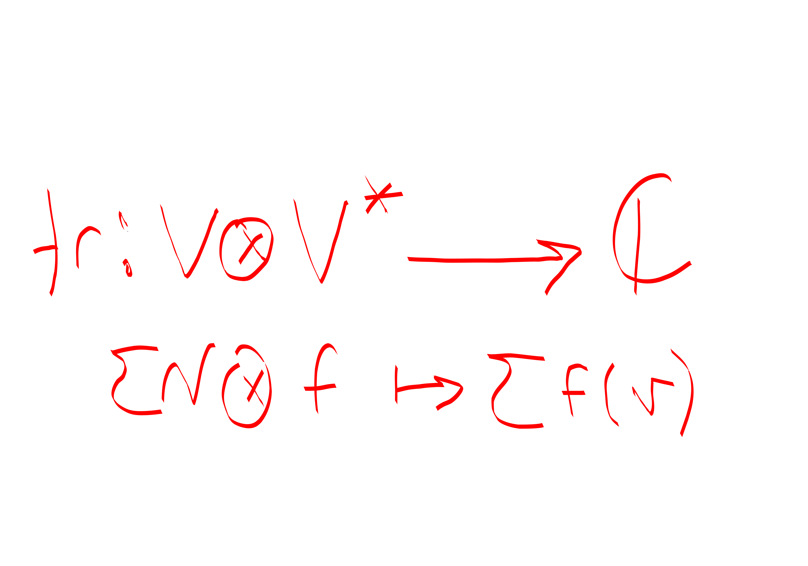

The trace of a matrix is usually defined as the sum of the diagonal entries of the matrix. That seems like a pretty random number. That’s kind of like writing down
\[\det A = \sum_{\pi \in S_n} \prod_{i\in [n]} A_{i,\pi_i} \text{sgn}(\pi_i)\] and then saying yeah this is of course a reasonable thing which just happens to also be the volume of a parallelpiped spanned by its columns, just happens to be intimately related to the shape of the image / kernel of \(A\), just happens to be the product of eigenvalues \(\prod \lambda_I\), just happens to be the unique multi-linear anti-symmetric form or whatever.
anyways, this isn’t a rant about determinants, I’ll leave that to Axler. It’s a rant about traces.
so what is a trace really? Well it’s commonly stated to be \(\sum \lambda_i\) sum of eigenvalues which at least makes it seem more obvious why this would be a basis invariant property of a linear operator. But that’s still not very satisfying.
Here’s a better definition of trace.
Consider \[V\otimes V^*.\] What’s the most natural function that you can define from \[V\otimes V^* \to \mathbb{C}.\] Well. Say you have a term \(v\otimes f\). There’s really only one thing you can do. \[v\otimes f \mapsto f(v).\]
ok, so what does this do? Well. It turns out that this map is the trace that we defined above!
To see why, fix a basis \(e_j^T\) for \(V^*\), and let’s say that we have some matrix \(T\in V\otimes V^*\) which does \(e_i \mapsto v^{(i)}.\) Then we can write \(T\) as \[T=\sum_j v^{(j)}\otimes e_j^T.\] This means that \(Tw = \sum_j v^{(j)} w_j\).
And we can see that this operator that we defined evaluated on \(T\) gives: \[\sum_j e_j^T v^{(j)} = \sum_j v^{(j)}_j\] as advertised.
weird! 